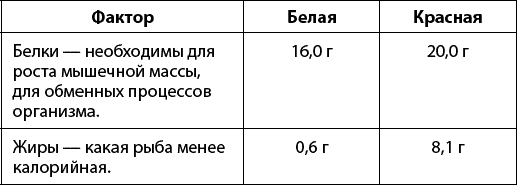
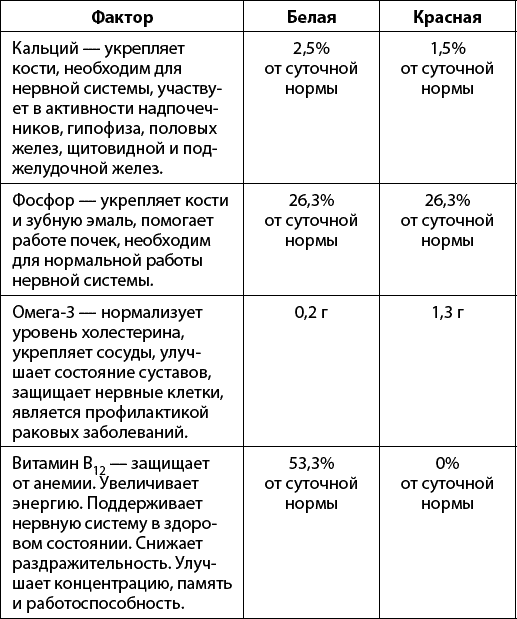

О силе и полезности разных продуктов. Рыба и морепродукты.

По данным Росстата за 2013 год, жители нашей страны употребили 444 тысячи тонн рыбы.
Раньше вся морская рыба, попадавшая на наши прилавки, вылавливалась в естественных условиях. В последние десятилетия усиленно развивается индустрия рыборазведения на фермах и в садках.
Есть принципиальные отличия между рыбой, которую разводили на ферме, и рыбой, выросшей в свободном выгуле. Зачастую рыба, выращенная на фермах, перенасыщена жиром и сильнее загрязнена паразитами, чем выловленная в естественных условиях. Кроме того, на фермах широко практикуются всевозможные добавки в корма, в том числе ростовые гормоны и антибиотики.
Бытует еще одно заблуждение – что красная рыба самая полезная. На самом деле это не совсем так.
Сравнение красной и белой рыбы по некоторым показателям:


Белая рыба для повседневного питания подходит больше не только потому, что полезней красной, но и потому, что значительно дешевле.
Мифы
? Свежая рыба всегда полезнее, чем замороженная.
Это не всегда так. Конечно, некоторая часть витаминов разрушается при заморозке, однако свежая рыба быстро портится, что не улучшает ее качества. Так что часто целесообразно и более разумно купить замороженную рыбу, которая, вероятней всего, просто была заморожена с самого начала и не подвергалась дополнительным процедурам. Польза от рыбы в замороженном виде в таком случае будет точно не меньше, чем от рыбы, хранившейся в ненадлежащих условиях, или рыбы, «выдаваемой» за свежую.
? Хищные виды рыб всегда содержат минимальное количество токсических веществ.
В хищной рыбе сконцентрировано гораздо больше отравляющих элементов, поскольку на ней заканчивается пищевая цепочка. Многие хищные рыбы могут накапливать в себе запредельное количество ртути. И чем она старше, тем больше ртути накопит. Поэтому не стоит покупать очень крупную хищную рыбу типа тунца, сайды, наваги, хека, нельмы, белуги, горбуши, чавычи. Особенно вредны они для беременных – ртуть может вызвать пороки развития плода.
? В рыбе нет холестерина.
О том, что в мясе есть холестерин, знают многие. Считается, что в рыбе холестерина нет вообще. Но это миф. И морская, и речная рыба содержит холестерин. Конечно, его там очень мало. И вреда здоровью он не наносит. Но все-таки он есть.
? Речная рыба снижает уровень холестерина.
Многие считают, что речная рыба, как и морская, снижает уровень холестерина. Но это миф. В морской рыбе есть полиненасыщенные жирные кислоты, которые выводят излишек холестерина из организма. А в речной рыбе их нет.
? Красная рыба в вакуумной упаковке всегда безопасна для здоровья.
Вакуумная упаковка не гарантирует свежесть и высокое качество продукта (особенно если рыба приготовлена не по ГОСТу, а по ТУ). Красная рыба в такой упаковке может содержать, кроме рыбы и соли (как и должно быть), различные вредные вещества. Такие, как красители, стабилизаторы, фосфаты, очень вредные для здоровья.
? В морской рыбе не бывает паразитов.
Многие уверены, что паразиты водятся только в речной рыбе, а в морской их нет, так как вода в океане соленая. Но это не так. Паразиты могут быть и в морской рыбе. Например, анизакиды. Они могут поражать почти все виды морских рыб. И если человек ими заразится, то у него может возникнуть язва кишечника!
? Рыба горячего копчения полезнее рыбы холодного копчения.
При копчении образуются канцерогенные вещества. Самое высокое содержание таких веществ – в рыбе горячего копчения. При высоких температурах канцерогены быстрее оседают на коже рыбы и активнее проникают внутрь. При этом наиболее опасна рыба горячего копчения (особенно тонкокожая – сельдь, салака, скумбрия, мойва и т. п.), приготовленная на костре. Рыба горячего копчения, приготовленная в промышленных условиях, будет менее вредна. Наименее опасна толстокожая рыба (лещ, сом, сазан, форель и т. п.) холодного копчения. В ней канцерогены практически не содержатся.
? Лучше покупать крупную рыбу.
Многие люди покупают рыбу покрупнее. Во-первых, в ней меньше костей. Во-вторых, на столе она выглядит лучше. Но на самом деле чем крупнее рыба, тем она старше. А чем старше морская рыба, тем больше в ней могло накопиться солей тяжелых металлов, которых так много в современном океане. То же касается и речной рыбы. Ведь во многих реках содержатся различные токсические отходы. Поэтому лучше покупать рыбу помельче.
? Сушеная рыба полезна для здоровья.
Не стоит забывать, что в сушеной рыбе содержится огромное количество соли, которая может привести к заболеваниям сердечно-сосудистой системы и суставов. Также сушеную рыбу с осторожностью нужно принимать людям с заболеваниями почек. Не стоит сушеную рыбу покупать с рук. При неправильной технологии соления и сушки может быть риск заражения паразитами. Вывод: сушеную рыбу можно иногда себе позволить, но полезной для здоровья ее вряд ли можно назвать.
Правда
? Частое употребление рыбы снижает риск сердечно-сосудистых заболеваний.
При регулярном употреблении польза от рыбы действительно ощутима. Полиненасыщенные жирные кислоты Омега-3, которые в необходимых количествах содержатся в жирной рыбе холодных северных вод, способствуют предотвращению сердечно-сосудистых заболеваний, уменьшают риск образования тромбов в сосудах и способствуют улучшению кровотока в капиллярах, что снижает риск смерти от сердечных заболеваний. Но необходимо помнить, что в красной рыбе, выращенной в садках, Омега-3 практически не содержится!
? Съеденная рыба быстрее переваривается в нашем организме, чем мясо или птица.
Свежая хорошо приготовленная рыба быстро переваривается и не будет задерживаться в организме. Это связано со строением мышечных волокон. Чтобы начать переваривать мышечные белки, организму нужно сначала переварить оболочку мышечного волокна, которая у мяса (например, свинины или говядины) и птицы имеет очень прочную, толстую и трудноперевариваемую оболочку по сравнению с мышечными волокнами рыбы. Этим определяется ее популярность в качестве диетического продукта.
? При употреблении рыбы всегда есть риск заражения паразитами.
Употребление сырой, недостаточно прожаренной или слабопросоленной рыбы грозит вероятностью заражения глистами. Не доваривая или недостаточно промораживая, недостаточно просаливая рыбу, человек становится носителем (окончательным хозяином) гельминтов. Поэтому обязательно подвергайте рыбу термической обработке!
? Морская рыба полезна для щитовидной железы.
Существует распространенное мнение, что нужно есть морскую рыбу, чтобы улучшить работу щитовидной железы, и это действительно так. Ведь в морской рыбе содержится много йода, который необходим для производства гормонов щитовидной железы. Много йода содержится в минтае – 100 % РСП, окуне – 40 % РСП, камбале, тунце, горбуше – около 30 % РСП. Поэтому ешьте их, чтобы улучшить работу щитовидной железы.
? Рыбий жир улучшает здоровье глаз.
Считается, что рыбий жир улучшает зрение, и это правда. В нем содержатся полиненасыщенные жирные кислоты и витамин А. Эти вещества улучшают зрение и защищают от куриной слепоты.
Желательно, чтобы рыба стала неотъемлемой частью рациона каждого человека, у которого нет на нее аллергии. Лучше всего, если есть возможность приобретать свежую или живую рыбу. Но все-таки для большинства наших граждан самой доступной остается рыба мороженая.
Согласитесь, когда рыба заморожена, сложно определить, свежая она или тухлая. Недобросовестные продавцы нередко этим пользуются и подсовывают нам что ни попадя. Поэтому научитесь правильно выбирать мороженую рыбу. Эти правила просты и помогут оградить вас от приобретения некачественного продукта.
Не покупайте рыбу без головы! Рыба тухнет с головы. Поэтому, как только вы увидели обезглавленную рыбу, – насторожитесь. Скорее всего, на заморозку отправилась рыбка не первой свежести.
Осмотрите жабры и глаза – главные показатели качества мороженой рыбы. У мороженой рыбы хорошего качества – светлые выпуклые глаза. Плавники и жаберные крышки должны быть плотно прижаты к телу рыбы. Впалые глаза и оттопыренные жабры говорят об одном – рыба потеряла свежесть задолго до заморозки.
Оцените форму рыбы. Внимательно рассмотрите рыбу со всех сторон. Если она ободранная, покореженная или потерявшая форму, значит, ее неоднократно размораживали и замораживали вновь. Выбирайте хорошо промороженную рыбу, сохранившую форму и не имеющую повреждений.
Оцените цвет. Если рыба правильно заморожена – цвет будет однородным, серебристым, блестящим. Не берите рыбу с белыми пятнами или участками, поменявшими цвет, что может указывать на обморожение или порчу. Если же на брюшке рыбы вы видите желтоватый оттенок – значит, она начинает портиться. К отравлению это не приведет, но рыба будет горчить.
Обратите внимание на вес рыбы. Качественная рыба должна быть весомой. Если замороженная рыба неестественно легкая и поблекшая, значит, в морозилке она провела много времени и усохла. Мясо такой рыбы легко ломается по краям брюшного разреза. У такой рыбы будет пресный вкус.
Еще рыбу часто покупают в засоленном виде. Однако такая рыба может быть напичкана красителями, ароматизаторами и консервантами. Но на самом деле солить рыбу так легко, что многие из вас, узнав, как это делается, наверняка перестанут покупать соленую рыбу в магазинах. Ведь и вкус, и запах, и, главное, цена покупной рыбы будут сильно отличаться в худшую сторону от домашней!
Подойдет любая красная рыба: лосось, семга, кижуч, нерка, горбуша, кета. Главное ведь, не какая это рыба, а какой она свежести. Солить нужно только свежую рыбу. Как это проверить? Во-первых, рыба должна пахнуть… рыбой! Морем, свежестью соленого прибоя, никаких посторонних запахов быть не должно. Во-вторых, при нажатии рыба должна пружинить, след от надавливания пальцем должен быстро исчезать. В-третьих, жабры должны быть темного, насыщенного красного цвета. Только такую рыбу можно и нужно солить.
Можно солить рыбу целиком, но в домашних условиях лучше солить филе. На лист фольги насыпать морскую соль. Соль обязательно должна быть крупной! Тогда при засолке рыба впитает ровно столько соли, сколько нужно, и вы не пересолите рыбу.
На соль выложить филе рыбы. Присыпать ее солью сверху и посыпать щепоткой сахара. Сверху положить крупно нарезанный укроп. Завернуть рыбу в фольгу и убрать в холодильник минимум на сутки.
Соленая рыба укрепляет сосуды, снижает уровень глюкозы, улучшает работу нервной системы, снижает уровень холестерина и относительно малокалорийна – 153 ккал на 100 г.